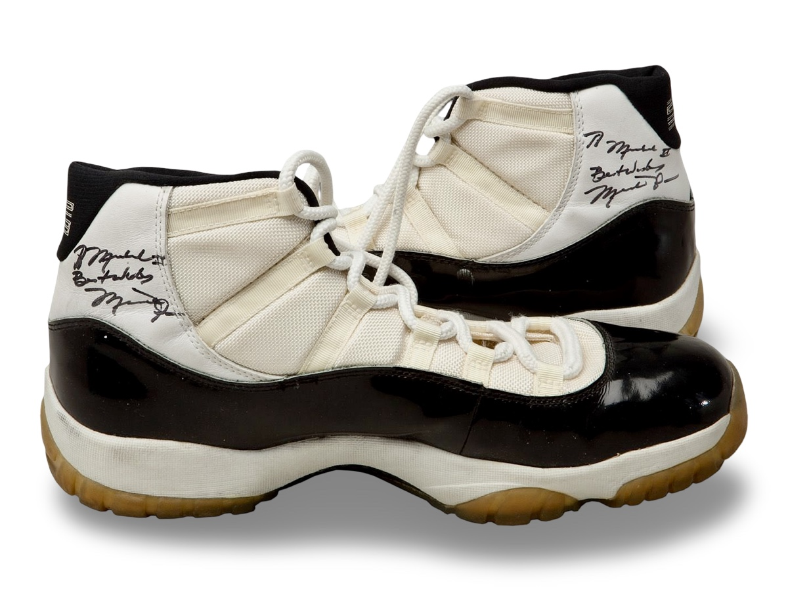
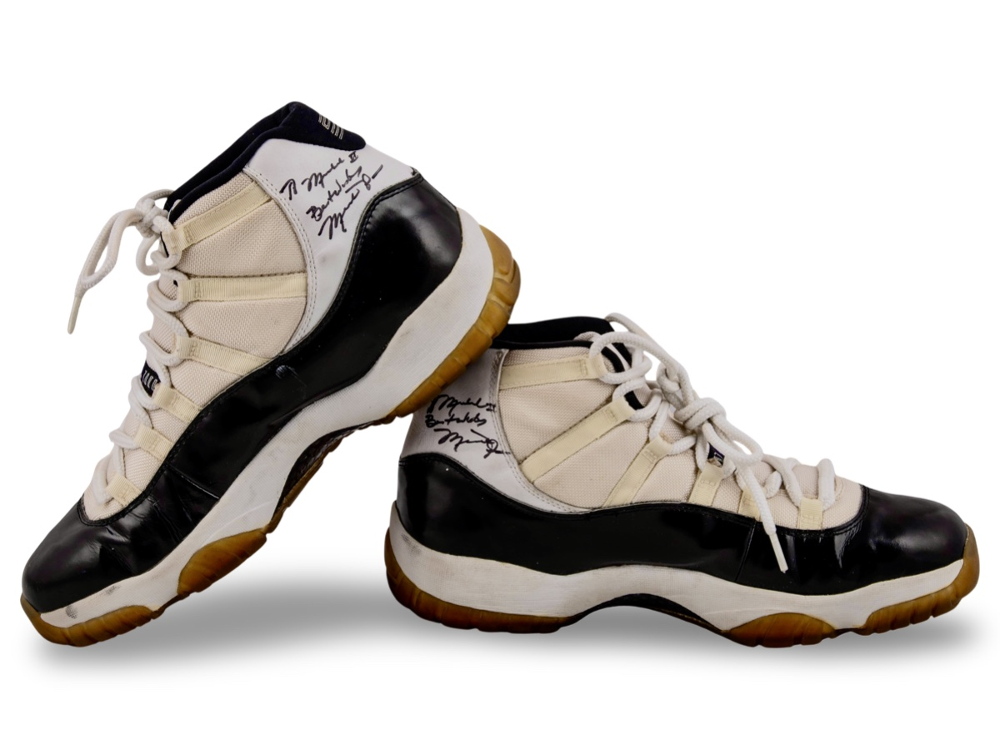
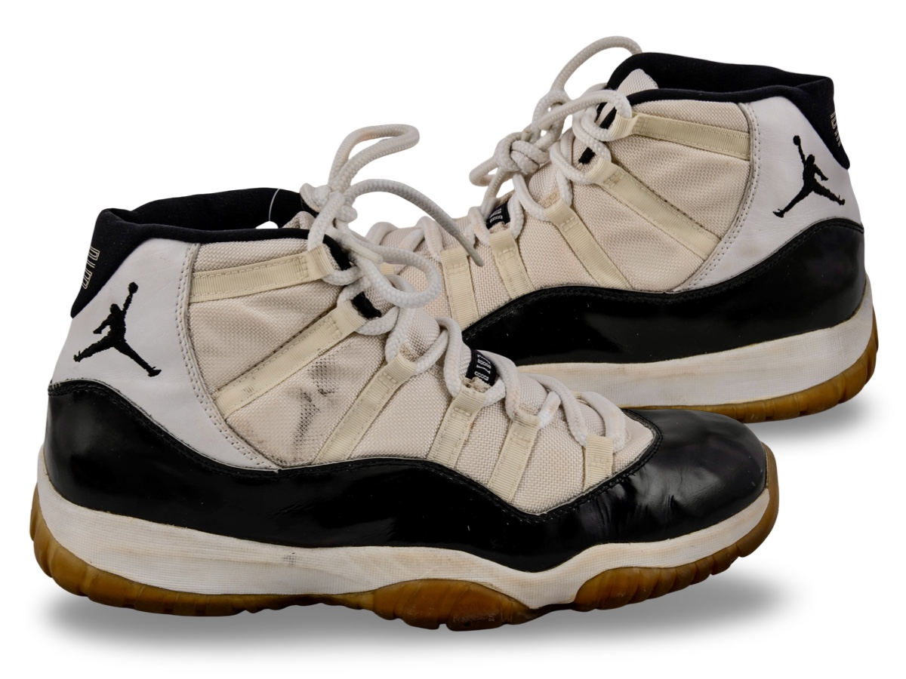
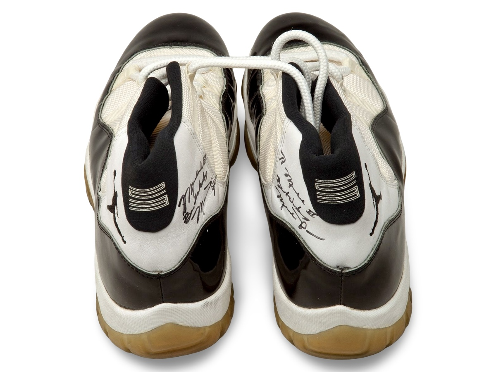

Air Jordan XI worn verse the Los Angeles Lakers.
Attributed to a unknown Lakers game, with dual personalized
autographs.
Public Sale
- Auction House: Goldin Auctions
- Sale Date: March 14, 2026
- Lot #: 62
- Sale Price: $74,420
View Sale Listing 2026 → View Sale Listing 2024 → View Sale Listing 2015 →
Photo Match Details
- Photo-Matched: No
- Games Photo-Matched: 0
Research & Provenance
- Provenance comes from Michael Cooper, former NBA player for the Los Angeles Lakers.